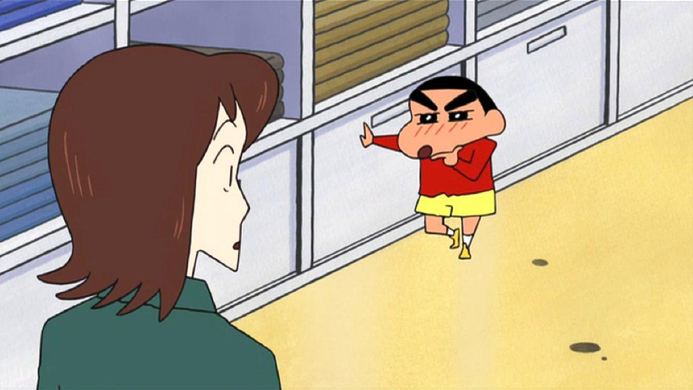
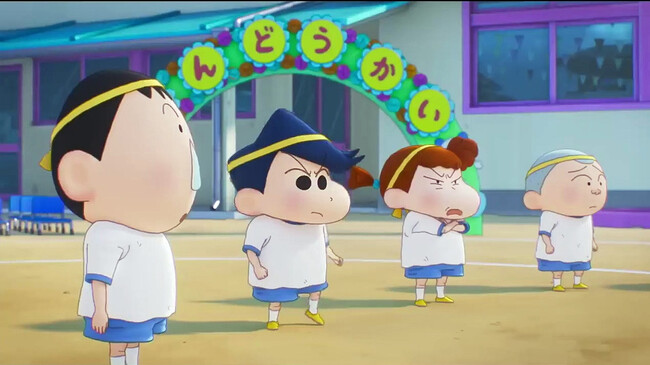
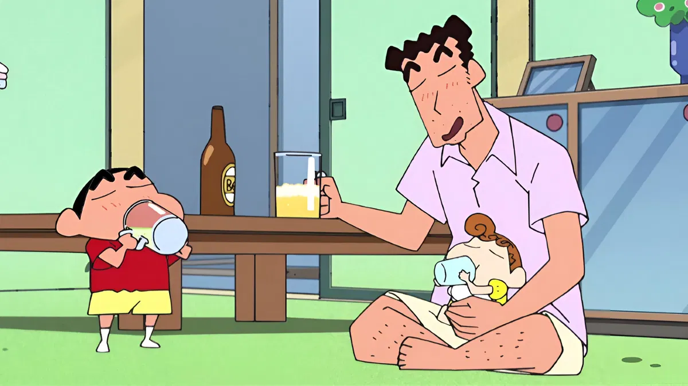
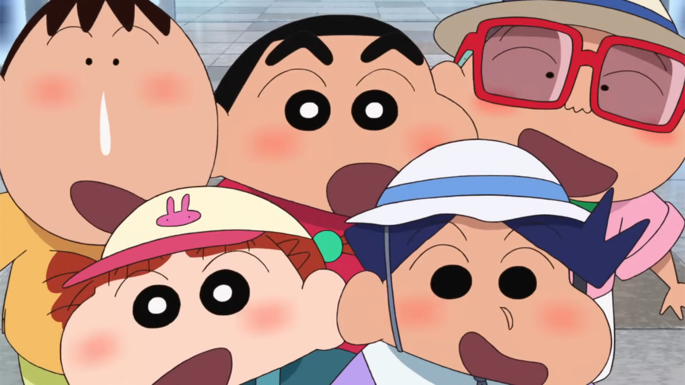
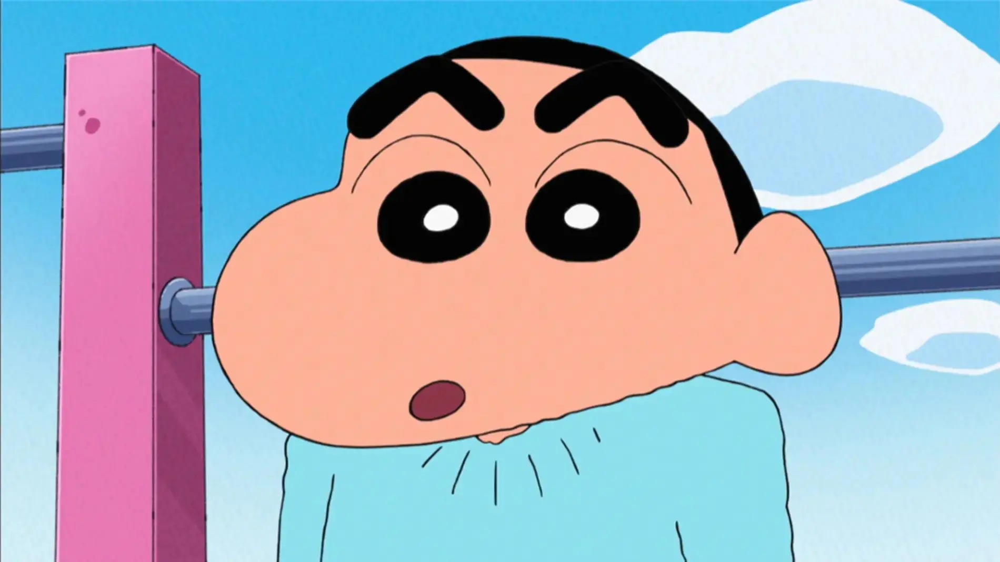
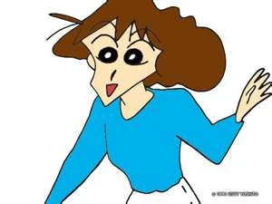
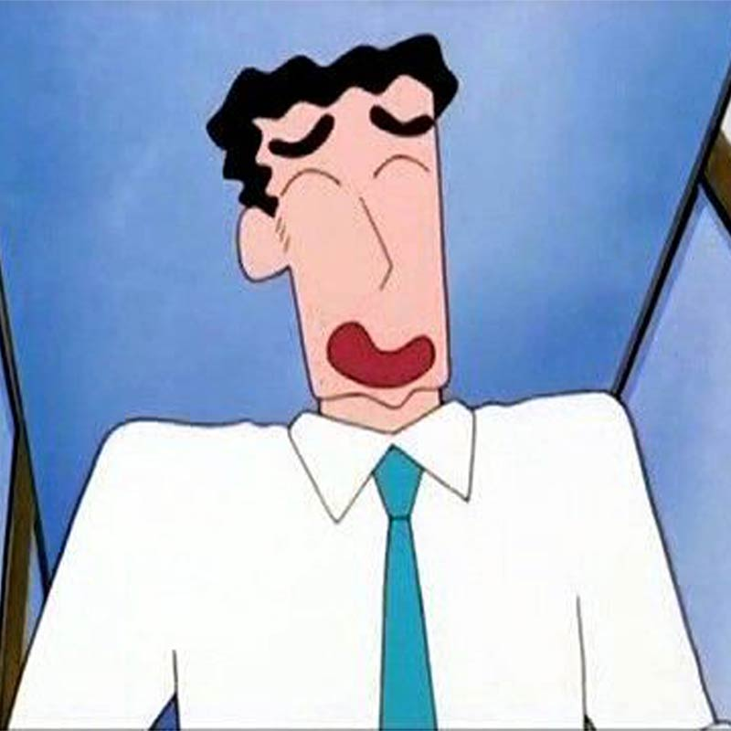
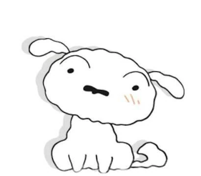

Galeria de fotos
- 
- 


- 


- 
El personaje de **Shinnosuke Nohara** y la serie *Crayon Shin-chan* (クレヨンしんちゃん) fueron creados por el mangaka Yoshito Usui, y se publicaron por primera vez en la revista Weekly Manga Action en agosto de 1990. El humor de la serie, centrado en las travesuras de un niño de cinco años y la sátira de la vida familiar japonesa, fue inmediatamente popular. El manga original, aunque breve, sentó las bases para un fenómeno cultural.
La adaptación al anime, producida por **Shin-Ei Animation**, comenzó a emitirse el 13 de abril de 1992. A diferencia de muchas otras series, *Shin Chan* no siguió una saga lineal, sino que se centró en la vida cotidiana y los gags recurrentes, lo que permitió una emisión continua. Sus protagonistas, la familia Nohara (Shinnosuke, Misae, Hiroshi) y su perro Nevado, se hicieron universalmente reconocibles por su humor adulto y descarado.
La serie llegó a España a través de canales autonómicos a finales de los años 90. Rápidamente ganó una gran base de seguidores, destacando por su doblaje único que capturó perfectamente la esencia gamberra y descarada del protagonista A pesar de las controversias iniciales por su contenido, se estableció como una de las comedias más populares.
Su éxito global se consolidó con la producción de múltiples **películas animadas**, que a menudo presentan aventuras más elaboradas y con un toque de acción o fantasía que contrasta con el día a día. Aunque su creador original falleció en 2009, la serie ha continuado bajo un equipo creativo, manteniendo vivo el legado de Shinnosuke y su familia. Hoy en día, **Shin Chan** es un referente del anime de comedia japonés junto a series como *Doraemon*.
La longevidad de **Shin Chan** se debe a su capacidad para evolucionar sin perder su toque irreverente. Su humor sigue siendo un espejo divertido de las dinámicas familiares y sociales, atrayendo tanto a nuevos espectadores como a aquellos que crecieron con sus payasadas. Su influencia en la cultura pop japonesa y mundial es indiscutible, siendo una figura icónica del anime de los 90.
nombre completo de Shin Chan es Shinnosuke Nohara.>
La serie fue creada por Yoshito Usui en 1990.
Shin Chan tiene solo 5 años, pero actúa como un adulto.
Su perro se llama Nevado (Shiro en japonés).
Shin Chan es famoso por su baile del culito.
La serie fue censurada en muchos países por su humor irreverente.
El supermercado favorito de Misae es el Kasukabe Mall.
Hay más de 1000 episodios del anime.
El creador falleció en 2009 y el anime continuó bajo otro equipo.
El personaje está basado en niños reales que Usui observó en parques.
| Foto | Nombre | Parentesto |
|---|---|---|
|  | Shinnosuke Nohara | Protagonista (Hijo) |
|  | Misae Nohara | Madre |
|  | Hiroshi Nohara | Padre |
 |
Himawari Nohara | Hermana pequeña |
|  | Shiro (Nevado) | Mascota (Perro) |